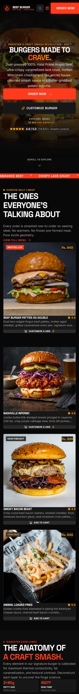

Restaurant ordering app · Live
Beef Burger Patties
A cinematic burger restaurant site with online ordering, built for customers in Pakistan.


Overview
A food-focused interface with a responsive ordering experience. Customers build a burger topping by topping, add kitchen notes, manage a cart and find branches across Pakistan.
Animation is handled with GSAP and Framer Motion, app state with Zustand, and the back end with Supabase.
- Burger customizer, topping by topping
- Kitchen notes, cart and checkout flow
- Deals and branch discovery across Pakistan
- Cinematic, motion-led interface